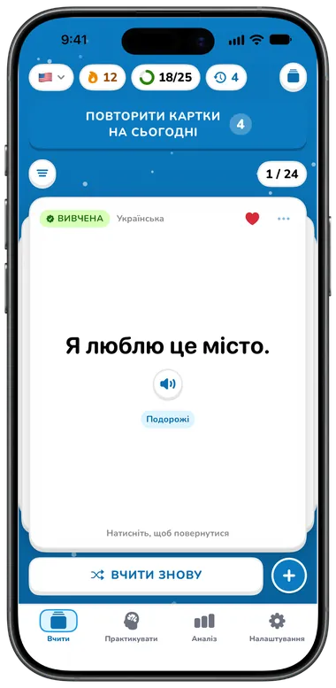
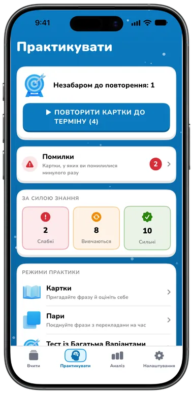
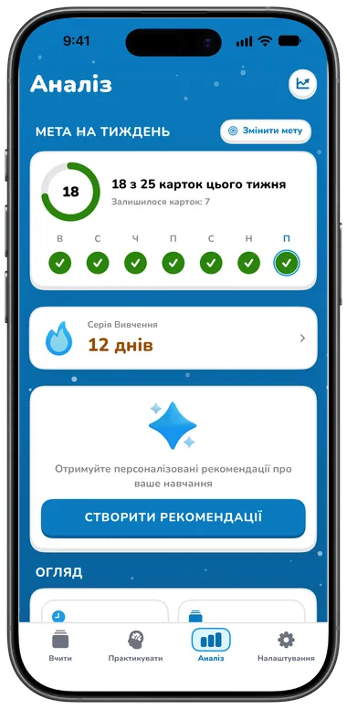

Можливості
Усе, щоб заговорити
Картки, які можна слухати, ігри, з якими повторення не набридає, і практика, що змушує промовляти слова вголос. Почніть безкоштовно, а з Premium — отримайте більше.

Старт за секунди
Оберіть мови, рівень, мету й інтереси — і Flippin сам збере вашу першу колоду.
- Стартовий набір готових колекцій фраз за вашими інтересами — колода ніколи не буде порожньою
- Спробуйте три справжні картки просто під час налаштування: переверніть, прослухайте й позначте «Ще раз» або «Знаю»
- Обліковий запис не потрібен; вхід через Apple необов’язковий


Картки за мить
Введіть слово чи фразу — за мить переклад підставиться сам. Його можна відредагувати, ваші зміни збережуться.
- Переклад Apple на пристрої, якщо мову завантажено, інакше — Google
- Пишіть будь-якою з двох мов: напрямок змінюється одним дотиком
- Нотатки, до п’яти тегів і вибране на кожній картці
- Зображення з Pexels та емодзі — введені вручну або підказані AI Premium


Чуйте кожне слово
Торкніться динаміка на будь-якому боці картки, у будь-якому списку чи під час практики.
- Безкоштовні голоси Google (дев’ять англійських акцентів) і системні голоси, які працюють і офлайн
- Швидкість від 0,5× до 2×
- Майже 1000 природних голосів Speechify з фільтрами, прослуховуванням і рекомендаціями для кожної мови Premium


Перегортайте й вчіть
Ваша колода — стос об’ємних паперових карток. Торкніться, щоб перевернути, змахніть до наступної, перемішайте й пройдіть знову.
- На кожній картці видно, чи вона нова, вивчається чи вже вивчена
- Фільтр за вибраним, складними картками чи тегом
- Режим навчання показує спершу нову мову, режим подорожі — спершу вашу
- Режим емодзі показує на звороті емодзі замість перекладу Premium

Сім режимів практики
Практика сама обирає картки, яким це потрібно: спершу картки до повторення, далі помилки, потім нові. Або тренуйте лише помилки чи слабкі, ті, що вивчаються, або сильні картки.


| Режим | Що потрібно робити | План |
|---|---|---|
| Картки | Пригадайте значення, відкрийте відповідь і оберіть «Ще раз» або «Знаю» (або змахніть) | Безкоштовно |
| Пари | Поєднайте шість пар у двох стовпцях на час | Безкоштовно |
| Тест із кількома варіантами | Оберіть правильний переклад із чотирьох варіантів | Premium |
| Вставте слово | Доповніть речення — його значення показано нижче | Premium |
| Аудіювання | Прослухайте фразу (повторіть або сповільніть) і оберіть значення | Premium |
| Письмо | Напишіть фразу; дрібні неточності в діакритиці чи пунктуації зараховуються як «майже» | Premium |
| Вимова | Утримуйте кнопку й промовте фразу; її перевірить розпізнавання мовлення, а за потреби можна ввести текст | Premium |
Кожне заняття завершується підсумками: правильні відповіді, точність, час, що скоро треба повторити, і ваша мета на тиждень. Картки з помилками повертаються через кілька карток, а кожна відповідь оновлює рівень опанування картки й призначає наступне повторення.
Серії та цілі
Маленькі щоденні перемоги — усе видно з першого погляду.
- Серія занять із календарем на місяць, найкращою серією та наступною метою (7, 30, 100, 365 днів)
- Мета на тиждень — 10, 25, 50 або 100 карток — з кільцем на кожен день тижня
- Щоденне нагадування про заняття та нагадування про складні картки у зручний для вас час


Стежте за прогресом
Безкоштовно: ваша серія, мета на тиждень, загальний час занять, вивчені сьогодні картки й заняття, а також точність за весь час.
- Графіки часу занять за тижнями, місяцями й роками Premium
- Рівні опанування, динаміка точності, досягнення та нагороди Premium
- AI-коуч зі щоденними інсайтами та рекомендаціями за підсумками вашого тижня Premium


AI-розмовники
Опишіть, що хочете вивчити, оберіть 10, 15 або 20 карток і отримайте готову колекцію для вашої мовної пари та рівня.
- Торкніться картки, щоб відредагувати її, оберіть, які додати, створіть заново або змініть запит
- Останні 20 результатів зберігаються як чернетки, навіть офлайн
- Безкоштовно можна переглянути приклад набору перед переходом на Premium
Premium Для AI-функцій потрібні Premium і вхід через Apple. Створений AI вміст може містити помилки.


30 колекцій фраз
168 корисних фраз кожною мовою за 11 темами: основи, подорожі, спілкування, спосіб життя, їжа, надзвичайні ситуації, покупки, погода, технології, робота й розваги.
- Переглядайте будь-яку колекцію й обирайте потрібні картки
- По одній колекції на тему безкоштовно (усього 11) Безкоштовно
- Усі 30 колекцій Premium


І приємні дрібниці

Синхронізація iCloud
Картки, теги й історія практики синхронізуються між iPhone та iPad через ваш власний iCloud — з обліковим записом або без.

Обліковий запис за бажанням
Вхід через Apple синхронізує профіль, серію та підписку між пристроями. Після виходу картки залишаються.
Світла й темна тема
Ясне небо вдень і зоряна ніч у темному режимі — за системним налаштуванням або на ваш вибір.
34 мови інтерфейсу
Застосунок теж говорить вашою мовою, а для арабської та івриту є інтерфейс справа наліво.
Безкоштовно та Premium
Безкоштовний план містить до 40 карток в одній мовній парі. Premium знімає обмеження й додає все, що вище позначено як Premium.
Premium коштує $5.99/місяць, $39.99/рік (із 7-денним безкоштовним пробним періодом для нових передплатників річного плану, які відповідають умовам) або $99.99 один раз за доступ назавжди. Ціни вказано в доларах США, вони залежать від країни чи регіону; App Store показує вашу ціну перед покупкою. Див. Умови використання.
Порівнюєте застосунки? Читайте Flippin і Anki.

Почніть говорити вже сьогодні
Завантажте Flippin безкоштовно, оберіть мови — і перші фрази вже готові до практики.
Для iPhone та iPad · iOS 18 або новіша